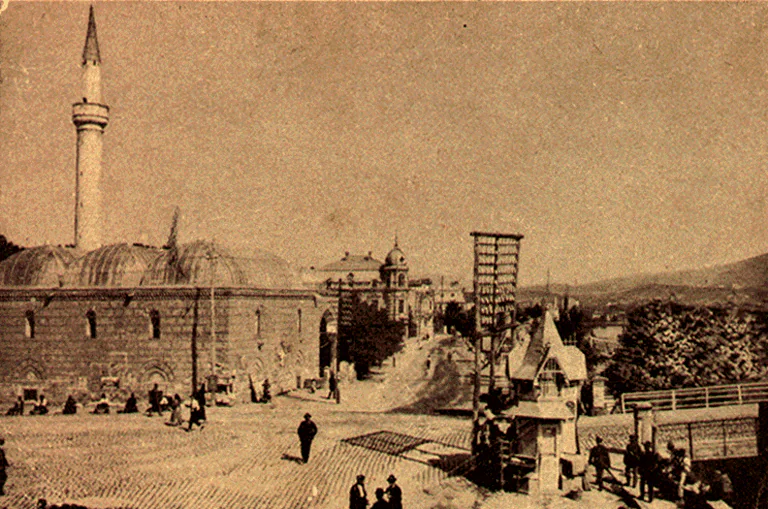
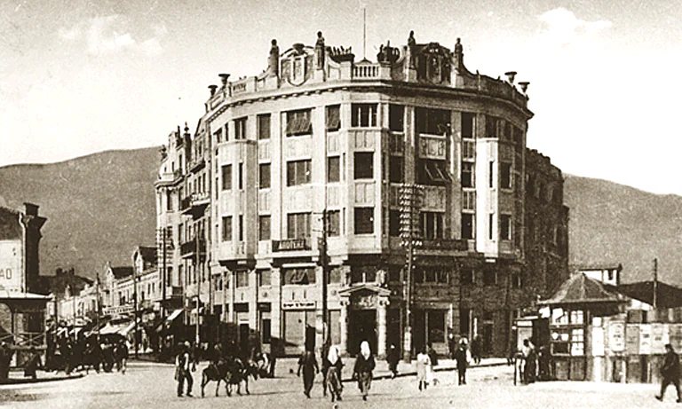
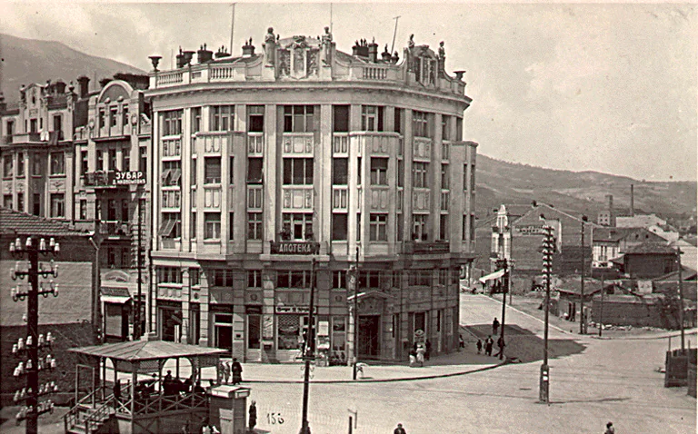

Прослава - трг
- Сценарио
- Ацо Петровски и Аки Павловски
- Режија
- Трајче Попов
- Сниматељ
- Киро Билбиловски и Трајче Попов
- Година
- 1949
- Трајање
- 00:19

Трг града Скопља фотографисан око средине 19. века.

Скопље крајем 19. века. Трг са Бурмали џамијом и неколико изграђених објеката око ње. Необликована улица. Окупљалиште превозника трговачке робе са воловским запрегама.

Трг крајем 19. и почетком 20. века. У првом плану је стајалиште фијакера и запрежних кола. Надесно се протежу објекти, у два реда, који су били испред самог Каменог моста. Иза њих је Бурмали џамија. Лево од ње изграђени су стамбени објекти, а одмах иза њих види се део банке. У позадини се уздиже скопска тврђава - Кале са касарном.

Трг крајем 19. и почетком 20. века. У првом плану је стајалиште фијакера и запрежних кола. Надесно се протежу објекти, у два реда, који су били испред самог Каменог моста. У њима су били смештени трговачки и занатски дућани. Лево од њих је Бурмали џамија, а поред ње изграђени су стамбени објекти. У позадини се уздиже скопска тврђава - Кале са касарном.

Скопље за време Балканских ратова. Бурмали џамија са стајалиштем фијакера. Десно од ње виде се обострано изграђени објекти који су се налазили испред улаза на Камени мост. У њима су били смештени трговачки дућани и занатлије. У првом плану виде се чистачи ципела и присуство војника. Улица је обликована са отвореним каналима за атмосферску воду.

Део трга испред Каменог моста (за време Балканског рата). Примећују се некалдрмисане улице. Објекат слева је један од објеката који су у два реда били изграђени испред Каменог моста. У њима су се налазили трговачки и занатски дућани. Око 1920. године су срушени.

Скопље, око 1920. год. Део градског трга испред Каменог моста. Први киосци за успутни сервис и продају. Киосци имају наглашену архитектуру у детаљима, тј. у обликовању кровова. Мост је проширен пешачким конзолама.

Скопље, око 1920. год. Уређен градски трг, са урбаним елементима, озиданим зеленим сквером, уређеним калдрмисаним површинама, поплочаним тротоарима са ивичњацима. Наглашен прилаз Каменом мосту са неометаним визурама ка реци и градској тврђави. Присутна живост грађана и фијакера као јавних превозних средстава.

Скопље, око 1920. год. Уређен градски трг, са урбаним елементима, озиданим зеленим сквером, уређеним калдрмисаним површинама, поплочаним тротоарима са ивичњацима. Наглашен прилаз Каменом мосту са неометаним визурама ка реци и градској тврђави. Присутна живост грађана и фијакера као јавних превозних средстава.

Скопље после Првог светског рата, са почетком уређења градског трга. Срушени су објекти који су се налазили иза Бурмали џамије, испред Каменог моста. Мост има нову ограду на пешачким конзолама. У позадини се види део Пајко махале, на левој обали Вардара.

Скопље одмах после Првог светског рата. Градски трг пре изградње Ристићеве палате. Поглед на разбијену структуру традиционалне архитектуре. Право нагоре је главна улица која води до тадашње железничке станице. Лево до пола је данашња улица „11. октобар“.

Скопље, 1920-их. Градски трг са јужне стране са делом Ристићеве палате на десној страни. Лево су хотел „Сарајево“, хотел „Уједињење“ и кафана „Маргер“. Развој бројних објеката и трговачких дућана дуж главне улице.

Трг, 1920-их. У првом плану је стајалиште фијакера (испред Официрског дома), а у позадини доминира објекат апотекара Ристића, популарно названа Ристићева палата.

Скопље око 1930. године. Градски трг са јужне стране са Ристићевом палатом и стовариштем дрва у првом плану. Развој бројних објеката и трговачких дућана дуж главне улице.

Скопље, око 1930. год. Део градског трга са Ристићевом палатом. Десно се види ограда стоваришта дрва, где се продавао грађевински материјал.

Снимак трга Македонија из авиона. (1920-их)

Део трга са Ристићевом палатом (1930-их)

Део трга и Ристићева палата. Лево доле постављена је покривена платформа за војни оркестар, који је свирао недељом и празником. Десно у даљини види се млин „Балкан“. (1930-их)

Скопље око 1930. године. Градски трг са Ристићевом палатом и стовариштем дрва у првом плану. Развој бројних објеката и трговачких дућана дуж главне улице.

Скопље око 1930. године. Градски трг са јужне стране после изградње Ристићеве палате, са стовариштем дрва у првом плану. Развој бројних објеката и трговачких дућана дуж главне улице.

Скопље око 1930. године. Део трга са јужне стране, после изградње Ристићеве палате, са стовариштем дрва у првом плану и главном улицом ка железничкој станици са бројним објектима и трговачким дућанима.

Део трга, са Официрским домом у позадини
- 1920-их.

Трг око 1927. године. Јужни прилаз Каменом мосту. Иза лево виде се Народно позориште и скопска тврђава - Кале.

Трг око 1927. године. Јужни прилаз Каменом мосту. У првом плану је кинотераса, на којој су се у летњем периоду приказивали филмови.

Скопље, око 1925. год. Део градског трга испред Каменог моста. Први киосци за успутни сервис и продају. Киосци имају наглашену архитектуру у детаљима, тј. у обликовању кровова. Мост је проширен пешачким конзолама. У позадини лево види се Народно позориште и скопска тврђава - Кале. У првом плану је рушење кинотерасе, на чијем је месту изграђена Народна банка.

Трг око 1926. године. Уређен градски трг, са урбаним елементима, озиданим зеленим сквером, уређеним калдрмисаним површинама, поплочаним тротоарима са ивичњацима. Поред зеленог сквера налазило се стајалиште фијакера, а одмах поред њега и паркинг за моторна и такси возила. На десној страни су ресторани и хотели. Право је Камени мост са делом Јеврејске и Пајко махале. У левом делу фотографије је Официрски дом у изградњи.

Трг, друга половина 1920-их. Уређен градски трг, са урбаним елементима, озиданим зеленим сквером, уређеним калдрмисаним површинама, поплочаним тротоарима са ивичњацима. Поред зеленог сквера налазило се стајалиште фијакера. На десној страни су ресторани и хотели. Лево је Официрски дом, који је још у изградњи. У позадини је Камени мост са делом Јеврејске махале и Пајко махале.

Трг града Скопља - 1920-их. Испред Официрског дома налазила се такси станица моторних возила. Али и фијакери још увек постоје као превозно средство грађана.

Трг у целини - крај 1920-их. Испред Официрског дома налазила се такси станица моторних возила. Али и фијакери још увек постоје као јавно превозно средство грађана.

Трг са хотелом „Сарајево“ и популарном кафаном „Маргер“, омиљеним местом грађана Скопља. Лево од хотела „Сарајево“ био је хотел „Уједињење“. У првом плану, на тротоару, седи продавац ђеврека. (око 1935. године)

Трг са хотелом „Сарајево“ и популарном кафаном „Маргер“, која је била омиљено место грађана Скопља. Лево од хотела „Сарајево“ био је хотел „Уједињење“. На левој страни види се јужни прилаз Каменом мосту - 1920-их.

Трг са Народном банком, привредном трговинском комором у изградњи и делом Пајко махале са Отоманском банком. Испред привредне трговинске коморе су хотели и кафана „Маргер“ (пре њиховог рушења). (1930-их)

Део трга са споменицима који су се налазили на јужном улазу Каменог моста. - 1930-их

Део трга ка Каменом мосту. На улазу на мост, на два висока мермерна постамента, постављена су два коњаника (рад вајара Антуна Августинчића). На тргу је изграђена и фонтана. На левој страни види се Народно позориште, скопска тврђава - Кале и део Јеврејске махале. (око 1930. године)

Део трга са Народном банком и привредном трговинском комором. (1930-их)

Трг града Скопља, 1950-их, са старом поштом у позадини, а на левој страни Природњачки музеј.

Трг, 1950-их. Прва зграда слева је зграда позната под именом „Мацура“. У њој су се налазиле централна апотека и друге продавнице. У позадини се виде: Официрски дом, Народна банка и Камени мост. У првом плану, на месту некадашњег стоваришта дрва, је лепо уређен парк.

Трг града Скопља, 1950-их, са хотелом „Македонија“ на левој страни.

Трг 1950-их.

Трг 1950-их.

Део трга са Официрским домом, а у позадини Народно позориште и скопска тврђава - Кале. (1950-их)

Део трга ка Каменом мосту. Лево је Официрски дом, а десно Народна банка и привредна трговинска комора. Градски аутобуски превоз (једноспратни и двоспратни аутобуси), са почетном и крајњом станицом на тргу. (1950-их)

Трг града Скопља око 1950. године. Слева је Официрски дом, а десно Народна банка са привредном трговинском комором. Између њих је Камени мост, а с друге стране виде се објекти банака и Ибни Пајко.

Трг - 1950-их

Трг, 1970-их. Поглед ка Каменом мосту, згради „Ибни Пајко“ и комплексу банака. Трг се тих година користио као паркинг простор.

Део трга, 1970-их, са Ристићевом палатом и објектима у улици „Гоце Делчев“.

 Аквадукт4 разгледнице
Аквадукт4 разгледнице Кале30 разгледница
Кале30 разгледница Мостови60 разгледница
Мостови60 разгледница Кеј58 разгледница
Кеј58 разгледница Трг46 разгледница
Трг46 разгледница Објекти66 разгледница
Објекти66 разгледница Хришћански храмови19 разгледница
Хришћански храмови19 разгледница Муслимански објекти33 разгледнице
Муслимански објекти33 разгледнице Официрски дом29 разгледница
Официрски дом29 разгледница Позориште28 разгледница
Позориште28 разгледница Железничка станица13 разгледница
Железничка станица13 разгледница Школе36 разгледница
Школе36 разгледница Паркови12 разгледница
Паркови12 разгледница Пијаце18 разгледница
Пијаце18 разгледница Улице38 разгледница
Улице38 разгледница Панорама I60 разгледница
Панорама I60 разгледница Панорама II30 разгледница
Панорама II30 разгледница Колажи55 разгледница
Колажи55 разгледница Поплаве9 разгледница
Поплаве9 разгледница Земљотрес27 разгледница
Земљотрес27 разгледница Скопље 200026 разгледница
Скопље 200026 разгледница